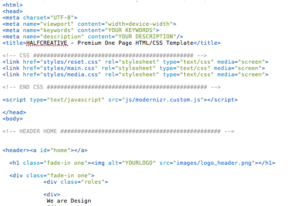
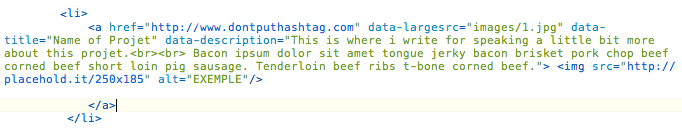

Created: 04/08/2013
By: Supview
Email: hello@iamsupview.be
Thank you for purchasing my theme. If you have any questions that are beyond the scope of this help file, please feel free to email via my user page contact form here. Thanks so much!
This theme is a one page portfolio. All of the information within the main content area is nested within a div with an id of "primaryContent". The general template structure is the same throughout the template. Here is the general structure looks like.
If you have to write something, remplace links, this is where you have to go :)
Here is the structure of One Work
Don't leave the href="" with an hashtag, it won't makes work the expander. So put a link like this one : http://www.yourdomain.com/#/
There's always a table of content like this one
/* 01. Body and things that we don't change 02. Navigation 03. Setting the main's sections 04. Home Section 05. Works Section 06. About Section 07. Contact Section 08. Twitter Module 09. Social Module */
I'm using three CSS files in this theme. The first one is media CSS Styling. This is where you can found everything about the FontFace, the Media Queries for make it responsive and finally the keyframes for little annimations on the website.
You will found the home background on line 137
background:url('http://www.placehold.it/1400x800')no-repeat center center fixed; /* -- CHANGE HERE -- */
About the Background 100% for iPad / iPhone, you have to change also the link of your background in the media.css
The second file ( named style.css ) contains all of the specific stylings for the page. The file is separated into sections using:
/* 01. NAVIGATION ================================================== */ some code /* 02. WORKS SECTION ================================================== */ some code /* 03. ABOUT SECTION ================================================== */ some code /* 04. CONTACT SECTION ================================================== */ some code etc, etc.
The thirth file ( named gumby.css) is the framework that i'm using. you have nothing to touch there. It's for the row and column.
If you would like to edit a specific section of the site, simply find the appropriate label in the CSS file, and then scroll down until you find the appropriate style that needs to be edited.
This theme imports Seven Javascript files.
You will probably use mostly the scripts.js, if you wan't to add your twitter feed you have just to remplace my username by yours and also the modpath from my website to your website.
/* -- TWITTER -- */
jQuery(function($){
$("#ticker").tweet({
username: "Supview",
modpath: 'http://www.yourwebsite.com/js/twitter/', /* director of the twitter folder */
page: 1,
avatar_size: 0,
count: 10,
template: "{text}{time}",
filter: function(t){ return ! /^@\w+/.test(t.tweet_raw_text); },
loading_text: "loading ..."
etc.
});
It's the same structure as the index.html for the HTML Part.
For using it with your E-Mail just replace the code below here on line 5.
$email_to = "hello@yourmail.com";
I've used the following images, icons or other files as listed.
Once again, thank you so much for purchasing this theme. As I said at the beginning, I'd be glad to help you if you have any questions relating to this theme. No guarantees, but I'll do my best to assist. If you have a more general question relating to the themes on ThemeForest, you might consider visiting the forums and asking your question in the "Item Discussion" section.